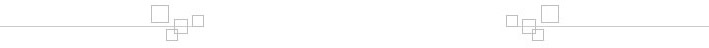

全站索引
公司BIM体系优势
在客户公司现阶段架构的基础上，协助公司制定BIM体系搭建和向BIM转型的计划，基于不影响公司现阶段的流程的原则，逐步和平稳地实现向BIM的发展。并且在客户公司转型的过程中，全程陪伴客户，给予及时有效的指导。
我司将借鉴国际前沿的BIM实施管理方案，在BIM技术，BIM软硬件配置，BIM团队建立，公司级BIM战略、BIM流程等方面提供咨询服务，为了客户确实将BIM落地并产生效益。
我司将长期保持跟进国际最先进的BIM技术和BIM理论。为客户提供最具竞争力的BIM方案。
公司BIM技术和实施方案的特点
公司在BIM技术领域已经进行了多年的研究和开发，能够为建设方、总包单位和设计单位提供设计阶段、施工阶段和运维阶段的基于BIM技术的咨询服务。
公司拥有在设计、施工、项目管理等领域各有所长的核心成员以及专家顾问组成的技术和实施团队，技术及实施团队多元化且搭配合理。技术团队可提供实际应用的技术方案，实施团队深入到施工现场的全方位协同实施，可以解决施工第一线切实关心的问题，起到实际的效果。
各专业模型搭建
根据客户提供的CAD二维图纸，搭建建筑、结构、机电专业BIM模型。所搭建的BIM模型完全按照BIM标准化应用系统，使标准一致。当以上模型搭建完成，并符合BIM标准化应用系统的标准后，对模型进行整合，使其可以正确反映项目真实情况，提取的项目数据真实可用。
建模标准
1.建筑、结构部分：根据提供的图纸完成建筑结构BIM模型(包含但不限于平面、立面、标高、混凝土结构、砌体结构);
2.混凝土结构：反映混凝土平面(包括板边、标高、梁、板开洞、剪力墙开洞)、混凝土构件尺寸(梁、柱截面尺寸、板、剪力墙厚度);
3.门、窗根据图纸进行构件设计;
4.模型构件根据不同楼层建立，加入楼层信息(不会出现一根柱子从底到顶的情况);
5.机电部分：完成机电的初步设计图;
6.暖通:暖通系统所有设备、管道、管件、大型机电设备(机房、机井内大样设备模型等);
7.给排水：给排水系统所有设备、管道、管件、大型机电设备(机房、机井内大样设备模型等);
8.消防：消防的所有设备、室内外管道、管件、喷头、大型机电设备(机房、机井内大样设备模型等);
9.电气:配电柜、电缆桥架、线槽、线管(DN50以上)、配件(机房、机井内大样设备模型);
10.动力：配电柜、电缆桥架、线槽、线管(DN50以上)、配件(机房、机井内大样设备模型)。
碰撞检查与净空优化
工作流程
1.基于全专业施工图建立模型，进行全专业模型碰撞检查;
2.碰撞检查报告包括模型截图、原图纸编号、图纸版本、碰撞的位置坐标、碰撞的专业、提交的时间等必要信息;
3.根据设计单位修改的图纸，确认《碰撞检查报告》中问题的修改情况，根据修改的结果对模型进行修改，并向客户提供《碰撞问题处置方案》;
4.基于施工图模型进行空间净高预分析，并在平面图中表示出净高有问题的区域，提前反馈给业主或客户，形成协调解决方案，指导后期的管线综合;
5.交付成果:《碰撞检查报告》、《碰撞问题处置方案》、《净高分析报告》。
管线综合优化
由客户牵头，数字化顾问方及安装工程相关参与方共同制定总体安装规则，由数字化咨询按规则进行模拟安装排布，并共同议定最终实施方案，数字化咨询完成安装模型后出具单管安装定位图、支吊架定位图、土建预留预埋、主空间及走廊净高。
1.管线综合应在施工图阶段和施工专业深化阶段各完成一次;
2.施工图阶段管线综合过程中，设计单位、总承包单位应密切协作，以共同使用BIM模型的工作方式进行，设计单位应根据最终BIM模型所反映的三维情况，调整二维图纸;
3.施工专业深化阶段BIM管线综合应在设计阶段成果的基础上进行，并加入相关专业深化的管线模型，对有矛盾的部位进行优化和调整，专业深化设计单位应根据最终深化BIM模型所反映的三维情况，调整二维图纸;
4.管线综合过程中，如发现某一系统普遍存在影响合理管线综合，应提交设计单位做全系统设计复查。
施工进度管理
根据客户的施工进度计划，在3D模型上进行推演，预建造，确保进度计划合理可行。同时对建造过程中各阶段工程量及所需资金进行动态统计，给客户提供合理的资金流建议，达到成本控制的目的。
项目实际开展过程中，实时跟进项目进度，提供项目进度与计划进度对比报告，方便对项目进行管理。
利用互联网和BIM技术结合，让客户能同时对多个位于不同地理位置的工程实时进度进行跟进、管理。能够从三维模型上直观的看出每个工地现场的进度情况，并且了解到每个工地所需要的资金流情况。
施工模拟
对于施工的重点难点，根据工程需要，使用BIM模型予以详细深化模拟展示。施工模拟主要分为施工进度模拟、施工工艺模拟、施工组织模拟。
工程量计量、材料统计
施工辅助
利用BIM模型结合专业能力，进行模板计算、3D演示、施工交底等施工辅助；3D漫游及三维可视化交流。
施工监督与验收
预制和工业化指导
根据客户需求，为客户定制包含基础工程、主体工程、砌筑工程、屋面工程、装饰工程、建筑设备工程等方面的工业化解决方案。
1.协助客户制定项目工程的工业化计划，
2.协助客户对构件进行预制化分割，达到预制要求。
3.协助客户与预制加工工厂沟通协调。
4.协助客户制定现场拼装方案。
5.协助客户对施工质量进行管理。
我司引进国际前沿工业化的技术和管理方法，并将其本土化，使其适应国内现状，帮助客户实现工业化的平稳发展。
设施管理
公司联合美国BIManywhere公司为客户定制基于BIM技术的设施管理方案。通过对设施运行的最优化设计，提高设施利用者的满意度，从而达到设施资产有效利用并使资产增值。利用BIM技术，对设施进行更深刻更直观的管理。